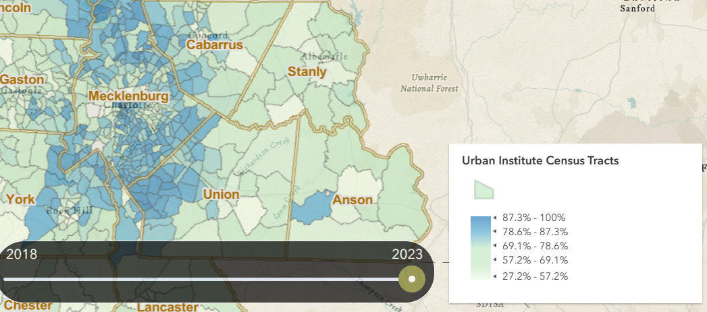
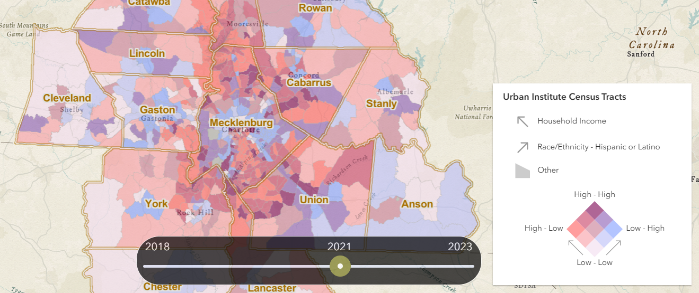

Carolinas Regional Explorer User Guide
This comprehensive user guide for the Carolinas Regional Explorer application, hosted at https://regionalexplorer.netlify.app/, is designed to assist users in navigating its features, exploring data relationships, and analyzing spatial patterns. The application is part of the Carolinas Regional Explorer project, a web-based interactive data platform developed by the UNC Charlotte Urban Institute, seeking to present neighborhood-level data on public life across 14 counties surrounding Mecklenberg County. These counties include Mecklenburg, Cabarrus, Union, Stanly, Rowan, Iredell, Catawba, Lincoln, Gaston, Anson, Cleveland, York (SC), Chester (SC), and Lancaster (SC). Modeled along the lines of the Charlotte-Mecklenburg Quality of Life Explorer (Quality of Life Explorer), the regional explorer expands the spatial footprint to serve the region and offers enhanced functionalities to understand regional growth dynamics.
The guide is divided into three sections, each addressing specific tools and functionalities, with detailed instructions and interpretations for effective use.
Section 1: General Navigation of the Interactive Maps
The first section focuses on navigating the interactive maps, which are central to the application's functionality, covering the 14 counties served by the UNC Charlotte Urban Institute. Users can zoom, pan, select different geographic levels, interpret the maps, and use a time slider to view changes over time.
- Users can zoom in and out using the mouse wheel or dedicated zoom buttons, found at the top-left of the map.
- Panning is achieved by clicking and dragging the map, allowing exploration of different regions within the 14 counties.

Using the Navigation features
- On the top left of the explorer are a set of navigation features.
- Below the zoom in and zoom out buttons, the Home button allows users to return the map to its default extent. This is especially useful after zooming in or selecting a city or county from the search bar.
- The next button is a basemap selector. Choose from a list of basemaps that suit your purpose and preference.
- The cross button below is to clear selection. When a city or county is selected, their boundaries are highlighted in red. This button will clear any selection made on the map.
- The zoom button below zooms to a selected city or census tract or county. This is useful when one arbitrarily zooms out of a selected feature but wants to return to the default extent of a city or a county.
- The eye button toggles between the explorer and the base map. This is useful when investigating the exact location of a census tract.

Selecting Geographic Levels:
- The search feature let users search for census tracts, towns, cities and counties in the region.
- The dropdown from the search box also allows you to browse the counties and cities to select them without typing.
- Selecting a city or county zooms in and shows the boundaries.
- The maps use color coding to represent values of selected indicators, such as socioeconomic or environmental data.
- A legend is provided, showing what each color corresponds to, such as a gradient from light to dark indicating low to high values. 
- The time slider allows users to view data from different time periods, likely years or specific dates, to track historical changes in the 14 counties.

Section 2: Exploring Relationships Between Indicators

The second section covers the tool for exploring relationships between indicators using bivariate choropleth maps, accessed via the side bar
Selecting Variables:
- Open the side bar, located on the left, and locate the section for exploring relationships.
- Select two variables from drop-down menus, ensuring they are relevant for comparison, such as household income and hispanic/Latino population.
- Click ‘Analyze Correlation’ to generate the bivariate choropleth map, which displays the relationship between the two variables spatially across the 14 counties.
Interpreting the Bivariate Choropleth Map:
- The map uses a combination of colors to represent the values of both variables. For instance, one variable uses shades of blue (light to dark for low to high), and another shades of red, with the resulting color on the map being a mix showing intermediate values.
- This visualization helps identify correlations, such as areas with high values in both variables appearing in darker shades, across the region.

Understanding the Legend:
- The legend, presented as a matrix or color grid, shows how different combinations of the two variables' values are represented.
- The arrows represent the axis of each variable with shades of color along the axis representing high and low values in those variables respectively. Simultaneously, the high values along these axes also represent the low values of the other variables and vice versa.
- Colors in the top and bottom corner of the square represent areas with high values in both variables and areas with low values in both variables respectively.

Section 3: Exploring Spatial Patterns and Clustering
The third section addresses spatial pattern analysis using local Moran's I, a statistical measure for identifying spatial clusters, accessed via a toggle button
Selecting an Indicator:
- The indicator is selected in the same way as the explorer. Moving the toggle button lets you enter the spatial pattern analysis mode.
- For example, if the median household income is selected in the explorer, clicking the toggle button shows the significant clusters and patterns of income in the region.
Interpreting Cluster Types:
- The local Moran's I map identifies four cluster types:
- HH (High-High): Areas with high values surrounded by high-value areas, indicating hot spots, such as regions with consistently high crime rates.
- LL (Low-Low): Areas with low values surrounded by low-value areas, indicating cold spots, such as regions with low population density.
- HL (High-Low): Areas with high values surrounded by low-value areas, outliers where a high value is isolated, such as a wealthy neighborhood in a poorer region.
- LH (Low-High): Areas with low values surrounded by high-value areas, outliers where a low value is isolated, such as a low-income area in a high-income region.
- These clusters help identify spatial autocorrelation, showing where similar values cluster together across the region.
- Interpretation should consider scale dependency; different zoom levels may reveal different patterns, affecting cluster identification across the 14 counties.
- The definition of neighbors (adjacent areas) impacts results, and users should ensure it aligns with the analysis context, especially given the regional scope.
- Data suitability is crucial; ensure the indicator is appropriate for spatial autocorrelation. Be cautious, as correlation does not imply causation, and clusters may reflect underlying factors not shown in the data.
Additional Resources
Below is a list of resources with links and citations to help people understand bivariate choropleth maps, spatial autocorrelation, and Local Moran's I. These resources include accessible guides, academic explanations, and practical examples, suitable for beginners and those seeking deeper insight.
Bivariate Choropleth Maps
Bivariate choropleth maps use color to display two variables simultaneously, helping to visualize their spatial relationships.
- "Bivariate Choropleth Maps: A How-to Guide" by Joshua Stevens
- "Bivariate Choropleth Maps" - Water Programming Blog
- "Bivariate Choropleth Maps" - CDC GIS Portal
Spatial Autocorrelation
Spatial autocorrelation measures how similar values are based on their proximity, often summarized with global statistics like Moran’s I.
- "Spatial Autocorrelation and Moran’s I in GIS" - GIS Geography
- "Chapter 8 Spatial Autocorrelation" - Spatial Statistics for Data Science with R by Paula Moraga
- "How Spatial Autocorrelation (Global Moran’s I) Works" - ArcGIS Pro Documentation
Local Moran’s I
Local Moran’s I identifies local clusters and outliers (e.g., HH, HL, LH, LL) within a dataset, extending global autocorrelation.
- "Local Spatial Autocorrelation (1)" - GeoDa Documentation
- "Chapter 13 Local Spatial Autocorrelation" - Geographic Data Science with Python
- "Moran’s I: Definition, Examples" - Statistics How To